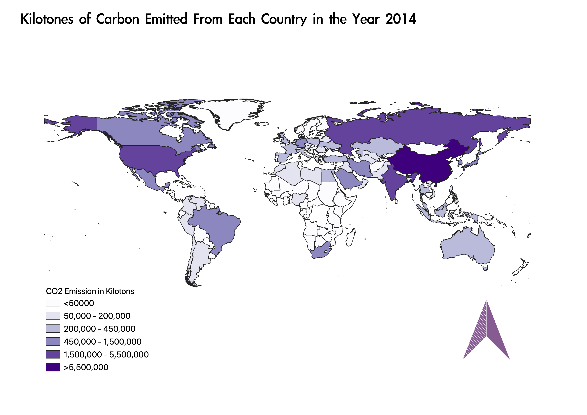

Coropleth of the World Showing Amount of CO2 Emissions Per Country
Rainey Dunham 730336342
I selected CO2 emissions because I, as an environmental science major, was interested in seeing how countries sized up to one another when it came to their contributions to the greenhouse effect and consequently global warming and climate change. As I suspected China leads the world in CO2 emissions followed by India, the US, Russia, and other more developed nations. I also found data pertaining to other greenhouse gases but I though CO2 would be more representative of how the country is contributing to climate change as carbon dioxide is the gas that has the most effect on the greenhouse effect.

Data used for this project
CVS dataset
Countries shp
Link to organisation CVS data was obtained from